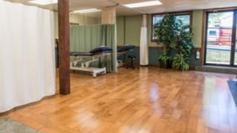
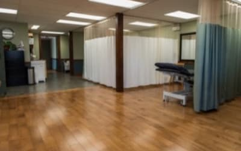

About Us
Ascent Physiotherapy is a full service physiotherapy clinic located in
Comox, BC. We offer Physiotherapy, including Manual/Manipulative
Therapy, IMS, Acupuncture, Radial Shockwave Therapy and exercise
prescription including Personal Training to the residents of the Comox
Valley and surrounding area.
"Grateful for the personalized care at Ascent Physiotherapy. Their expert
team and tailored approach made my recovery seamless. Highly recommend
their top-notch services for anyone in need of compassionate and effective
physiotherapy."
"Ascent Physiotherapy's personalized care and expertise transformed my
recovery. Highly recommend for effective physiotherapy with a personal
touch!"
Our Space




Ascent Physiotherapy is currently equipped with 12 private and semi
private treatment cubicles.
Large gym area equipped with treadmill, stationary bike, balance
equipment, free weights and a weight rack.
Large floor exercise area with room for gait analysis and
balance/co-ordination exercises.
Modalities include radial shockwave therapy, moist heat, ice,
therapeutic ultrasound, interferential current (IFC), transcutaneous
electrical stimulation (TENS), muscle stimulation and traction.
Treatment attire is provided but we encourage you to bring your own
athletic shorts or yoga pants.